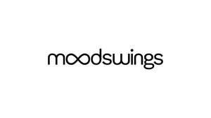

Trade Mark Journal No.2025/030 25 July 2025
UK00004234278 15 July 2025 (3,4,5,21)
Mark 1

Mark 2
- Class 3
- Aromatherapy preparations; aromatherapy oils; essential oils including aromatic essential oils; aromatherapy room sprays; room diffusers (reed); household fragrances including incense; cosmetics; toiletries; non-medicated toilet preparations; beauty care preparations; Soaps; hair care agents including hair shampoos and hair conditioners; body and skin care products including bath salts, bath oils, body wash, exfoliating scrubs, body lotions, body oils, body gels and body creams; cosmetics and lotions for protecting the skin from sunburn including suncream; perfumery; eau de toilette; body mist; lip balms; skin balms (non-medicated); anti-perspirants; deodorants; fragrances for automobiles; non-medicated cosmetics and toiletry preparations.
- Class 4
- Candles; aromatherapy fragrance candles; fragranced candles; scented candles; wicks for lighting; oils for fragrancing; oils for use as additives to heating oils.
- Class 5
- Dietary supplements; nutritional supplements; vitamin and mineral preparations; medicated nasal sprays; pharmaceutical preparations for inhalers; medicated balms and lip balm; health food supplements for persons with special dietary requirements; medicated toilet preparations, beauty care preparations, soaps, hair shampoos, hair conditioners, body care products and skin care products including bath salts, bath oils, body wash, exfoliating scrubs, body lotions, body oils, body gels and body creams; medicated cosmetics and toiletry preparations; medicinal oils; medicinal creams for protection of skin; medicated sunscreen preparations; medicated balms and lip balms; car, fabric and upholstery deodorants; air deodoriser sprays.
- Class 21
- Oil, essential oil and perfume burners; aromatic oil diffusers (other than reed diffusers); air fragrancing apparatus; perfume and scent atomisers and sprays; atomisers for household use.
Moods Beauty Limited
Representative: Withers LLP